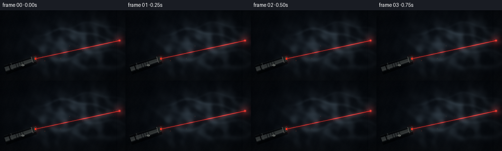
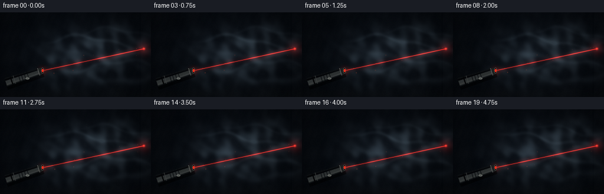
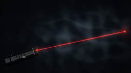

CODING AGENTS AS PIXEL WORLD MODELS
traex/GPT-5.6-Sol · phygen_053
点击播放 · 原生 RGB 像素
逐轮保存的候选
回放视频、检查图与代码变化。
每份候选均可单独播放。实际图片检查记录在下方工具轨迹中。
候选 01播放与检查图
点击播放 · 原生 RGB 像素


展开代码变化
--- 上一保存版本
+++ 本次保存版本
@@ -0,0 +1,204 @@
+from pathlib import Path
+import math
+import numpy as np
+import cv2
+from PIL import Image, ImageDraw, ImageFilter
+import artifact_io
+
+# Procedural, deterministic volumetric scene: a red laser crossing drifting smoke.
+W, H, N, FPS = 256, 144, 20, 4
+S = 3
+w, h = W*S, H*S
+rng = np.random.default_rng(5309)
+yy, xx = np.mgrid[0:h, 0:w].astype(np.float32)
+X, Y = xx/S, yy/S
+
+# Fixed Fourier modes provide temporally coherent turbulent detail.
+modes = []
+for _ in range(38):
+ angle = rng.uniform(0, 2*np.pi)
+ wavelength = rng.uniform(11, 58)
+ k = 2*np.pi/wavelength
+ modes.append((k*np.cos(angle), k*np.sin(angle), rng.uniform(0, 2*np.pi),
+ rng.uniform(-0.24, 0.24), rng.uniform(0.15, 1.0)))
+
+# Stable dust mote positions; they drift very slightly during the shot.
+dust = []
+for _ in range(42):
+ dust.append((rng.uniform(65, 245), rng.uniform(22, 124),
+ rng.uniform(0.22, 0.75), rng.uniform(0, 2*np.pi)))
+
+def smoothstep(a, b, v):
+ q = np.clip((v-a)/(b-a), 0, 1)
+ return q*q*(3-2*q)
+
+def smoke_density(t):
+ # Slow rightward/upward advection plus several soft, billowing volumes.
+ xa = X - 1.20*t
+ ya = Y + 0.78*t
+ f = np.zeros_like(X)
+ norm = 0.0
+ for kx, ky, ph, speed, amp in modes:
+ f += amp*np.sin(kx*xa + ky*ya + ph + speed*t)
+ norm += amp
+ f = f / max(norm, 1e-6)
+ f = (f + 1.0) * 0.5
+
+ # Main suspended smoke bank and distinct thin tendrils.
+ env1 = np.exp(-(((X-151-1.0*t)/77)**2 + ((Y-76+0.55*t)/45)**2))
+ env2 = np.exp(-(((X-202-0.5*t)/47)**2 + ((Y-51+0.9*t)/29)**2))
+ env3 = np.exp(-(((X-101-0.6*t)/38)**2 + ((Y-94+0.45*t)/34)**2))
+ clouds = (0.70*env1 + 0.40*env2 + 0.30*env3)
+ broken = smoothstep(0.39, 0.67, f)
+ den = clouds * (0.15 + 0.85*broken)
+
+ # Curled filaments make the smoke read as wispy rather than fog.
+ for i, (cy, phase, strength, width) in enumerate([
+ (49, .4, .23, 3.2), (69, 2.0, .18, 4.8), (91, 4.1, .20, 3.6),
+ (109, 1.2, .12, 5.4), (36, 5.0, .10, 2.8)]):
+ center = cy + 9*np.sin((X/31.0)+phase+t*.22) + 3*np.sin(X/11.0-phase-t*.13)
+ strand = np.exp(-((Y-center)/width)**2)
+ gate = np.exp(-((X-(156+i*8))/84)**2) * smoothstep(58, 90, X)
+ den += strength*strand*gate
+ return np.clip(den, 0, 0.82)
+
+def line_geometry(px, py, ax, ay, bx, by):
+ vx, vy = bx-ax, by-ay
+ vv = vx*vx+vy*vy
+ u = ((px-ax)*vx+(py-ay)*vy)/vv
+ cx, cy = ax+u*vx, ay+u*vy
+ return np.sqrt((px-cx)**2+(py-cy)**2), u
+
+def add_pointer(arr, t):
+ """Draw a small, credible anodized-metal laser pointer in the lower left."""
+ im = Image.fromarray(np.uint8(np.clip(arr,0,255)), 'RGB')
+ layer = Image.new('RGBA', (w,h), (0,0,0,0))
+ d = ImageDraw.Draw(layer)
+ # Centerline from rear to emitting aperture, in supersampled coordinates.
+ rear = np.array([10.0, 119.2])*S
+ front = np.array([72.2, 99.0])*S
+ v = front-rear; v /= np.linalg.norm(v)
+ n = np.array([-v[1],v[0]])
+ def poly(a,b,r1,r2,fill):
+ pts=[tuple(a+n*r1),tuple(b+n*r2),tuple(b-n*r2),tuple(a-n*r1)]
+ d.polygon(pts, fill=fill)
+ # contact shadow
+ sh_a=rear+np.array([1,5])*S; sh_b=front+np.array([1,5])*S
+ poly(sh_a,sh_b,8*S,6*S,(0,0,0,130))
+ # metallic body, layered highlights following its length
+ poly(rear,front-3*S*v,7.5*S,6.0*S,(14,17,19,255))
+ poly(rear+n*1.0*S,front-3*S*v+n*.7*S,4.5*S,3.5*S,(45,49,49,245))
+ poly(rear+n*3.7*S,front-3*S*v+n*2.8*S,1.2*S,.8*S,(94,98,94,130))
+ poly(rear-n*4.4*S,front-3*S*v-n*3.4*S,1.6*S,1.0*S,(2,3,4,150))
+ # rear cap rings
+ for q, col, wid in [(10,(4,5,6,255),2.0),(15,(59,62,61,255),1.0)]:
+ p=rear+v*q*S
+ d.line([tuple(p-n*7.1*S),tuple(p+n*7.1*S)],fill=col,width=max(1,int(wid*S)))
+ # grip grooves
+ for q in (24,29,34,39):
+ p=rear+v*q*S
+ d.line([tuple(p-n*6.6*S),tuple(p+n*6.6*S)],fill=(4,6,7,130),width=S)
+ # oval side button with a cool highlight
+ p=rear+v*37*S+n*5.1*S
+ rr=3.1*S
+ d.ellipse((p[0]-rr,p[1]-rr*.55,p[0]+rr,p[1]+rr*.55),fill=(69,73,71,255),outline=(130,134,128,220),width=S)
+ # front collar and glowing aperture
+ collar_a=front-v*7*S
+ poly(collar_a,front,6.3*S,5.0*S,(28,31,31,255))
+ d.line([tuple(collar_a-n*6.3*S),tuple(collar_a+n*6.3*S)],fill=(115,118,113,210),width=S)
+ # front face represented by a small angled dark ellipse + red center
+ p=front
+ r=5.1*S
+ d.ellipse((p[0]-r*.48,p[1]-r,p[0]+r*.48,p[1]+r),fill=(3,3,3,255),outline=(80,74,70,255),width=S)
+ d.ellipse((p[0]-1.5*S,p[1]-2.4*S,p[0]+1.5*S,p[1]+2.4*S),fill=(255,45,24,255))
+ # soft red glow spilling onto the nozzle
+ glow=Image.new('RGBA',(w,h),(0,0,0,0)); gd=ImageDraw.Draw(glow)
+ gd.ellipse((p[0]-8*S,p[1]-8*S,p[0]+8*S,p[1]+8*S),fill=(255,15,5,65))
+ glow=glow.filter(ImageFilter.GaussianBlur(4*S))
+ im=Image.alpha_composite(im.convert('RGBA'),glow)
+ im=Image.alpha_composite(im,layer)
+ return np.asarray(im.convert('RGB')).astype(np.float32)
+
+frames=[]
+for fi in range(N):
+ t=fi/FPS
+ den=smoke_density(t)
+
+ # Dim blue-black room wall with subtle plaster falloff, corner seam and tabletop.
+ radial=np.sqrt(((X-132)/180)**2+((Y-68)/116)**2)
+ base_lum=np.clip(1-radial,0,1)
+ arr=np.zeros((h,w,3),np.float32)
+ arr[...,0]=4.5+5.5*base_lum
+ arr[...,1]=7.0+7.7*base_lum
+ arr[...,2]=10.5+10.5*base_lum
+ # Very subtle wall texture (deterministic, not temporal shimmer).
+ texture=1.05*np.sin(X*.105)+.65*np.sin(Y*.18+X*.025)+.35*np.sin(X*.49+Y*.21)
+ arr += texture[...,None]
+ # vertical wall panel seam far right
+ seam=np.exp(-((X-237.5)/.65)**2)
+ arr -= seam[...,None]*3.5
+ # dark table edge near bottom
+ table=smoothstep(123,140,Y)
+ arr[...,0]+=table*2.0; arr[...,1]+=table*1.8; arr[...,2]+=table*1.2
+ arr *= (1-0.18*np.clip(radial,0,1))[...,None]
+
+ # Volumetric smoke: neutral blue-gray, varying opacity, with soft ambient edge light.
+ arr += den[...,None]*np.array([41,48,52],np.float32)
+ edge=cv2.GaussianBlur(den,(0,0),3.4*S)-cv2.GaussianBlur(den,(0,0),9.5*S)
+ arr += np.clip(edge,0,None)[...,None]*np.array([20,25,27])
+
+ # Laser path from pointer aperture to wall. It is narrow, parallel-sided, and
+ # becomes visible mainly where smoke particles scatter it toward the camera.
+ ax,ay=72.2,99.0
+ bx,by=244.0,61.8
+ dist,u=line_geometry(X,Y,ax,ay,bx,by)
+ inside=(u>=0)&(u<=1)
+ local_smoke=np.clip(den,0,1)
+ modulation=(0.26+1.32*local_smoke)*(0.97+0.03*np.sin(fi*.73))
+ # broad volumetric red glow, a fine saturated beam, and a tiny hot central core
+ broad=np.exp(-(dist/4.5)**2)*inside*modulation
+ beam=np.exp(-(dist/.72)**2)*inside*(0.52+1.55*local_smoke)
+ core=np.exp(-(dist/.23)**2)*inside
+ arr[...,0]+=broad*34 + beam*177 + core*95
+ arr[...,1]+=broad*2.4 + beam*8 + core*48
+ arr[...,2]+=broad*1.6 + beam*4 + core*30
+
+ # A bright impact dot and concentric diffuse halo on the back wall.
+ rr=np.sqrt((X-bx)**2+(Y-by)**2)
+ halo=np.exp(-(rr/10.5)**2)
+ dot=np.exp(-(rr/2.05)**2)
+ hot=np.exp(-(rr/.55)**2)
+ arr[...,0]+=halo*42+dot*205+hot*120
+ arr[...,1]+=halo*2+dot*20+hot*100
+ arr[...,2]+=halo*1+dot*10+hot*70
+
+ # Individual dust particles catch the laser in and near the smoke.
+ particle_layer=Image.new('RGBA',(w,h),(0,0,0,0)); pd=ImageDraw.Draw(particle_layer)
+ for dx,dy,sz,ph in dust:
+ px=dx+0.55*t+1.1*np.sin(ph+t*.28)
+ py=dy-0.32*t+0.7*np.cos(ph+t*.35)
+ dd,uu=line_geometry(px,py,ax,ay,bx,by)
+ if 0<uu<1 and dd<12:
+ glow=max(0,1-dd/12)
+ r=max(1,int(sz*S))
+ alpha=int(30+110*glow)
+ pd.ellipse((px*S-r,py*S-r,px*S+r,py*S+r),fill=(255,91,57,alpha))
+ elif (int(dx+dy)%4)==0:
+ r=max(1,int(.35*S)); pd.ellipse((px*S-r,py*S-r,px*S+r,py*S+r),fill=(128,140,145,25))
+ particles=np.asarray(particle_layer).astype(np.float32)
+ pa=particles[...,3:4]/255
+ arr=arr*(1-pa)+particles[...,:3]*pa
+
+ # Pointer is foreground and occludes the beginning of the beam correctly.
+ arr=add_pointer(arr,t)
+
+ # Fine film grain is fixed mostly in screen space; enough to avoid synthetic flatness.
+ grng=np.random.default_rng(9000+fi)
+ grain=grng.normal(0,0.75,(h,w,1)).astype(np.float32)
+ arr=np.clip(arr+grain,0,255).astype(np.uint8)
+ # Area downsampling supplies clean antialiasing while preserving the hairline beam.
+ small=cv2.resize(arr,(W,H),interpolation=cv2.INTER_AREA)
+ frames.append(cv2.cvtColor(cv2.cvtColor(small,cv2.COLOR_RGB2BGR),cv2.COLOR_BGR2RGB))
+
+frames=np.stack(frames).astype(np.uint8)
+artifact_io.save(frames, Path(__file__).resolve().parent)
可观测工具轨迹
实际执行的命令与返回图片。
命令 1exit 0
/bin/bash -lc "cat prompt.txt && printf '\\n---RULES---\\n' && cat GENERATION_RULES.md && printf '\\n---SPEC---\\n' && cat task_spec.json"
命令 2exit 0
/bin/bash -lc "find . -maxdepth 2 -type f -printf '%p\\n' | sort | head -200 && printf '\\n--- tools ---\\n' && command -v ffmpeg && command -v python3 && command -v convert || true"
命令 3exit 0
/bin/bash -lc 'cat artifact_io.py'
命令 4exit 0
/bin/bash -lc "python3 - <<'PY' mods=['numpy','PIL','scipy','cv2','imageio'] for m in mods: try: x=__import__(m); print(m,'OK',getattr(x,'__version__','')) except Exception as e: print(m,'NO',e) PY"
命令 5exit 0
/bin/bash -lc "cat > generate.py <<'PY'
from pathlib import Path
import math
import numpy as np
import cv2
from PIL import Image, ImageDraw, ImageFilter
import artifact_io
# Procedural, deterministic volumetric scene: a red laser crossing drifting smoke.
W, H, N, FPS = 256, 144, 20, 4
S = 3
w, h = W*S, H*S
rng = np.random.default_rng(5309)
yy, xx = np.mgrid[0:h, 0:w].astype(np.float32)
X, Y = xx/S, yy/S
# Fixed Fourier modes provide temporally coherent turbulent detail.
modes = []
for _ in range(38):
angle = rng.uniform(0, 2*np.pi)
wavelength = rng.uniform(11, 58)
k = 2*np.pi/wavelength
modes.append((k*np.cos(angle), k*np.sin(angle), rng.uniform(0, 2*np.pi),
rng.uniform(-0.24, 0.24), rng.uniform(0.15, 1.0)))
# Stable dust mote positions; they drift very slightly during the shot.
dust = []
for _ in range(42):
dust.append((rng.uniform(65, 245), rng.uniform(22, 124),
rng.uniform(0.22, 0.75), rng.uniform(0, 2*np.pi)))
def smoothstep(a, b, v):
q = np.clip((v-a)/(b-a), 0, 1)
return q*q*(3-2*q)
def smoke_density(t):
# Slow rightward/upward advection plus several soft, billowing volumes.
xa = X - 1.20*t
ya = Y + 0.78*t
f = np.zeros_like(X)
norm = 0.0
for kx, ky, ph, speed, amp in modes:
f += amp*np.sin(kx*xa + ky*ya + ph + speed*t)
norm += amp
f = f / max(norm, 1e-6)
f = (f + 1.0) * 0.5
# Main suspended smoke bank and distinct thin tendrils.
env1 = np.exp(-(((X-151-1.0*t)/77)**2 + ((Y-76+0.55*t)/45)**2))
env2 = np.exp(-(((X-202-0.5*t)/47)**2 + ((Y-51+0.9*t)/29)**2))
env3 = np.exp(-(((X-101-0.6*t)/38)**2 + ((Y-94+0.45*t)/34)**2))
clouds = (0.70*env1 + 0.40*env2 + 0.30*env3)
broken = smoothstep(0.39, 0.67, f)
den = clouds * (0.15 + 0.85*broken)
# Curled filaments make the smoke read as wispy rather than fog.
for i, (cy, phase, strength, width) in enumerate([
(49, .4, .23, 3.2), (69, 2.0, .18, 4.8), (91, 4.1, .20, 3.6),
(109, 1.2, .12, 5.4), (36, 5.0, .10, 2.8)]):
center = cy + 9*np.sin((X/31.0)+phase+t*.22) + 3*np.sin(X/11.0-phase-t*.13)
strand = np.exp(-((Y-center)/width)**2)
gate = np.exp(-((X-(156+i*8))/84)**2) * smoothstep(58, 90, X)
den += strength*strand*gate
return np.clip(den, 0, 0.82)
def line_geometry(px, py, ax, ay, bx, by):
vx, vy = bx-ax, by-ay
vv = vx*vx+vy*vy
u = ((px-ax)*vx+(py-ay)*vy)/vv
cx, cy = ax+u*vx, ay+u*vy
return np.sqrt((px-cx)**2+(py-cy)**2), u
def add_pointer(arr, t):
\"\"\"Draw a small, credible anodized-metal laser pointer in the lower left.\"\"\"
im = Image.fromarray(np.uint8(np.clip(arr,0,255)), 'RGB')
layer = Image.new('RGBA', (w,h), (0,0,0,0))
d = ImageDraw.Draw(layer)
# Centerline from rear to emitting aperture, in supersampled coordinates.
rear = np.array([10.0, 119.2])*S
front = np.array([72.2, 99.0])*S
v = front-rear; v /= np.linalg.norm(v)
n = np.array([-v[1],v[0]])
def poly(a,b,r1,r2,fill):
pts=[tuple(a+n*r1),tuple(b+n*r2),tuple(b-n*r2),tuple(a-n*r1)]
d.polygon(pts, fill=fill)
# contact shadow
sh_a=rear+np.array([1,5])*S; sh_b=front+np.array([1,5])*S
poly(sh_a,sh_b,8*S,6*S,(0,0,0,130))
# metallic body, layered highlights following its length
poly(rear,front-3*S*v,7.5*S,6.0*S,(14,17,19,255))
poly(rear+n*1.0*S,front-3*S*v+n*.7*S,4.5*S,3.5*S,(45,49,49,245))
poly(rear+n*3.7*S,front-3*S*v+n*2.8*S,1.2*S,.8*S,(94,98,94,130))
poly(rear-n*4.4*S,front-3*S*v-n*3.4*S,1.6*S,1.0*S,(2,3,4,150))
# rear cap rings
for q, col, wid in [(10,(4,5,6,255),2.0),(15,(59,62,61,255),1.0)]:
p=rear+v*q*S
d.line([tuple(p-n*7.1*S),tuple(p+n*7.1*S)],fill=col,width=max(1,int(wid*S)))
# grip grooves
for q in (24,29,34,39):
p=rear+v*q*S
d.line([tuple(p-n*6.6*S),tuple(p+n*6.6*S)],fill=(4,6,7,130),width=S)
# oval side button with a cool highlight
p=rear+v*37*S+n*5.1*S
rr=3.1*S
d.ellipse((p[0]-rr,p[1]-rr*.55,p[0]+rr,p[1]+rr*.55),fill=(69,73,71,255),outline=(130,134,128,220),width=S)
# front collar and glowing aperture
collar_a=front-v*7*S
poly(collar_a,front,6.3*S,5.0*S,(28,31,31,255))
d.line([tuple(collar_a-n*6.3*S),tuple(collar_a+n*6.3*S)],fill=(115,118,113,210),width=S)
# front face represented by a small angled dark ellipse + red center
p=front
r=5.1*S
d.ellipse((p[0]-r*.48,p[1]-r,p[0]+r*.48,p[1]+r),fill=(3,3,3,255),outline=(80,74,70,255),width=S)
d.ellipse((p[0]-1.5*S,p[1]-2.4*S,p[0]+1.5*S,p[1]+2.4*S),fill=(255,45,24,255))
# soft red glow spilling onto the nozzle
glow=Image.new('RGBA',(w,h),(0,0,0,0)); gd=ImageDraw.Draw(glow)
gd.ellipse((p[0]-8*S,p[1]-8*S,p[0]+8*S,p[1]+8*S),fill=(255,15,5,65))
glow=glow.filter(ImageFilter.GaussianBlur(4*S))
im=Image.alpha_composite(im.convert('RGBA'),glow)
im=Image.alpha_composite(im,layer)
return np.asarray(im.convert('RGB')).astype(np.float32)
frames=[]
for fi in range(N):
t=fi/FPS
den=smoke_density(t)
# Dim blue-black room wall with subtle plaster falloff, corner seam and tabletop.
radial=np.sqrt(((X-132)/180)**2+((Y-68)/116)**2)
base_lum=np.clip(1-radial,0,1)
arr=np.zeros((h,w,3),np.float32)
arr[...,0]=4.5+5.5*base_lum
arr[...,1]=7.0+7.7*base_lum
arr[...,2]=10.5+10.5*base_lum
# Very subtle wall texture (deterministic, not temporal shimmer).
texture=1.05*np.sin(X*.105)+.65*np.sin(Y*.18+X*.025)+.35*np.sin(X*.49+Y*.21)
arr += texture[...,None]
# vertical wall panel seam far right
seam=np.exp(-((X-237.5)/.65)**2)
arr -= seam[...,None]*3.5
# dark table edge near bottom
table=smoothstep(123,140,Y)
arr[...,0]+=table*2.0; arr[...,1]+=table*1.8; arr[...,2]+=table*1.2
arr *= (1-0.18*np.clip(radial,0,1))[...,None]
# Volumetric smoke: neutral blue-gray, varying opacity, with soft ambient edge light.
arr += den[...,None]*np.array([41,48,52],np.float32)
edge=cv2.GaussianBlur(den,(0,0),3.4*S)-cv2.GaussianBlur(den,(0,0),9.5*S)
arr += np.clip(edge,0,None)[...,None]*np.array([20,25,27])
# Laser path from pointer aperture to wall. It is narrow, parallel-sided, and
# becomes visible mainly where smoke particles scatter it toward the camera.
ax,ay=72.2,99.0
bx,by=244.0,61.8
dist,u=line_geometry(X,Y,ax,ay,bx,by)
inside=(u>=0)&(u<=1)
local_smoke=np.clip(den,0,1)
modulation=(0.26+1.32*local_smoke)*(0.97+0.03*np.sin(fi*.73))
# broad volumetric red glow, a fine saturated beam, and a tiny hot central core
broad=np.exp(-(dist/4.5)**2)*inside*modulation
beam=np.exp(-(dist/.72)**2)*inside*(0.52+1.55*local_smoke)
core=np.exp(-(dist/.23)**2)*inside
arr[...,0]+=broad*34 + beam*177 + core*95
arr[...,1]+=broad*2.4 + beam*8 + core*48
arr[...,2]+=broad*1.6 + beam*4 + core*30
# A bright impact dot and concentric diffuse halo on the back wall.
rr=np.sqrt((X-bx)**2+(Y-by)**2)
halo=np.exp(-(rr/10.5)**2)
dot=np.exp(-(rr/2.05)**2)
hot=np.exp(-(rr/.55)**2)
arr[...,0]+=halo*42+dot*205+hot*120
arr[...,1]+=halo*2+dot*20+hot*100
arr[...,2]+=halo*1+dot*10+hot*70
# Individual dust particles catch the laser in and near the smoke.
particle_layer=Image.new('RGBA',(w,h),(0,0,0,0)); pd=ImageDraw.Draw(particle_layer)
for dx,dy,sz,ph in dust:
px=dx+0.55*t+1.1*np.sin(ph+t*.28)
py=dy-0.32*t+0.7*np.cos(ph+t*.35)
dd,uu=line_geometry(px,py,ax,ay,bx,by)
if 0<uu<1 and dd<12:
glow=max(0,1-dd/12)
r=max(1,int(sz*S))
alpha=int(30+110*glow)
pd.ellipse((px*S-r,py*S-r,px*S+r,py*S+r),fill=(255,91,57,alpha))
elif (int(dx+dy)%4)==0:
r=max(1,int(.35*S)); pd.ellipse((px*S-r,py*S-r,px*S+r,py*S+r),fill=(128,140,145,25))
particles=np.asarray(particle_layer).astype(np.float32)
pa=particles[...,3:4]/255
arr=arr*(1-pa)+particles[...,:3]*pa
# Pointer is foreground and occludes the beginning of the beam correctly.
arr=add_pointer(arr,t)
# Fine film grain is fixed mostly in screen space; enough to avoid synthetic flatness.
grng=np.random.default_rng(9000+fi)
grain=grng.normal(0,0.75,(h,w,1)).astype(np.float32)
arr=np.clip(arr+grain,0,255).astype(np.uint8)
# Area downsampling supplies clean antialiasing while preserving the hairline beam.
small=cv2.resize(arr,(W,H),interpolation=cv2.INTER_AREA)
frames.append(cv2.cvtColor(cv2.cvtColor(small,cv2.COLOR_RGB2BGR),cv2.COLOR_BGR2RGB))
frames=np.stack(frames).astype(np.uint8)
artifact_io.save(frames, Path(__file__).resolve().parent)
PY
python3 generate.py
ls -lh pixels.npz inspection.png frames/00.png index.html"命令 6exit 0
/bin/bash -lc "python3 - <<'PY'
import numpy as np
from PIL import Image
f=np.stack([np.asarray(Image.open(f'frames/{i:02d}.png')) for i in range(20)])
print(f.shape,f.dtype, f.min(),f.max())
print('frame mean',np.round(f.mean((1,2,3)),2))
print('adj MAE',np.round(np.abs(f[1:].astype(float)-f[:-1]).mean((1,2,3)),3))
print('first-last MAE',np.abs(f[-1].astype(float)-f[0]).mean())
# strong-red count confirms narrow laser signal
red=(f[...,0]>100)&(f[...,0]>f[...,1]*2)
print('red pixels/frame',red.sum((1,2)).tolist())
PY"视觉工具实际返回图片 1

视觉工具实际返回图片 2

保存候选 1 份；完成命令 6 次；可验证图片返回 2 张。原始 API 响应与完整日志保留在本地。